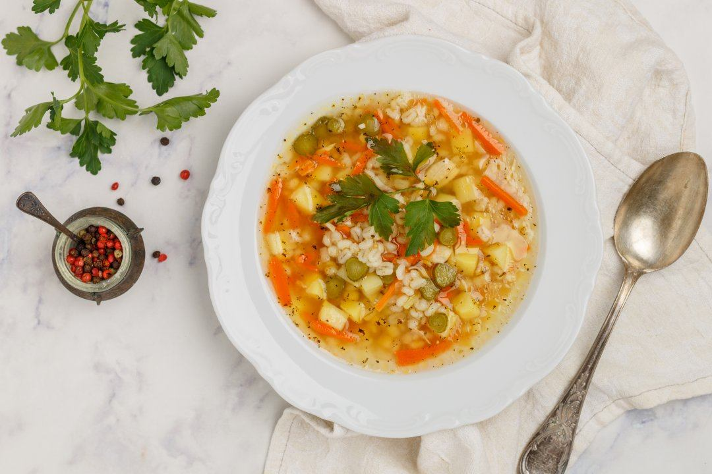

Прості рецепти смачних страв
Завжди буває так, ти тільки збираєшся щось приготовити смачне, заходиш в інтернет для рецепту і зник на роки? Саме для тебе ми приготували цей сайт, з найкращими рецептами з усього світу.
Перші страви
Розсольник
Розсольник по-домашньому – поживна перша страва, рецепт якої заснований на солоних огірках або огірковому розсолі. Цікаво, що раніше розсолом називали пиріг з куркою, гречаною кашею та порізаними вареними яйцями, а в начинку підливали розсіл. Цей рецепт розсольнику навіть згадував Гоголь у «Мертвих душах». Рецепт супу розсольник з’явився згодом – на огірковому розсолі, лимонному соку або капустяному розсолі.
Спочатку спробуємо, як приготувати розсольник з огірками за класичним рецептом з перловкою, а тоді вже будемо знати, як правильно варити розсольник з рисом і м’ясом або розсольник з грибами та перловкою. Цікаво буде спробувати інші варіанти: вегетаріанський розсольник – пісний рецепт, розсольник в мультиварці, розсольник з рибою, розсольник з фрикадельками. Смачний виходить розсольник за рецептом приготування з куркою та пшоном або гречкою.
- 300 гр свинячих реберець
- 2,50 л води
- 4 ст. л. перлової крупи
- 3 картоплини
- 2 цибулини
- 1 морква
- 3 ст. л. соняшникової олії
- 3 солоні огірки
- 0,50 скл. огіркового розсолу
- 2 лаврових листки
- Сіль, чорний мелений перець
- Кріп, петрушка
- Промиваємо, розрізаємо на шматочки та заливаємо водою ребра. Коли закипить, знімаємо піну та зменшуємо вогонь. Варимо ребра на повільному вогні під закритою кришкою протягом 40-50 хвилин.
- Обдаємо окропом, відкидаємо на друшляк і промиваємо перловку. Як варіант – відварюємо в окремій каструлі. В цьому випадку додаємо крупу у розсольник перед засмажкою.
- Очищаємо та нарізаємо кубиками картоплю. Вкладаємо її у розсольник разом з перловкою, коли зваряться ребра. Доводимо до кипіння та варимо ще 15-20 хвилин.
- У цей час зробимо засмажку: обсмажимо на олії подрібнену цибулю, натерті на великій тертці моркву та огірки. Додаємо засмажку у суп.
- Витримаємо розсольник п'ять хвилин на повільному вогні, потім до смаку вливаємо огірковий розсіл.
- Додаємо лавровий лист, перець і сіль, якщо потрібно. За 2-3 хвилини розсольник з традиційним кисло-солоним ніжним смаком буде готовий.
- Подаємо з нарізаною зеленню, але не відразу – розсольнику, як і більшості супів із засмажкою краще трохи настоятися і «дійти».
Другі страви
Курячі відбивні в духовці
Щоб приготувати курячі відбивні, досить просто обсмажити м'ясо з обох боків на сковороді. Можна і над кляром пофантазувати, і досягти бажаної скоринки. Але куряче м’ясо по-французьки, або курячі відбивні в духовці набувають небувалої соковитості та ніжності. І все завдяки можливості поєднати м'ясо з овочами та сиром. Помідори та цибуля запікаються на подушці з курячого м'яса. Зверху філе посипаються тертим сиром, який утворює апетитну вершкову скоринку.
- 500 гр курячого філе
- 5 помідорів
- 250 гр твердого сиру
- 5 ст. л. майонезу
- 1 цибулина
- 2 ст. л. олії
- сіль
- перець
- Курячу грудку розрізаємо впоперек на шматки товщиною 2 см та відбиваємо.
- Викладаємо шматочки курятини на деко, змащене маслом. Або використовуємо глибоку жаростійку форму.
- Відбивні солимо, перчимо та змащуємо майонезом.
- Нарізаємо цибулю дрібними кубиками, помідори – кружальцями.
- Викладаємо на відбивні цибулю, потім помідори.
- Викладаємо на відбивні цибулю, потім помідори.
- Твердий сир натираємо на великій тертці.
- Виймаємо деко з духовки, посипаємо відбивні тертим сиром і випікаємо ще протягом 10-15 хвилин. Все просто і дуже швидко!